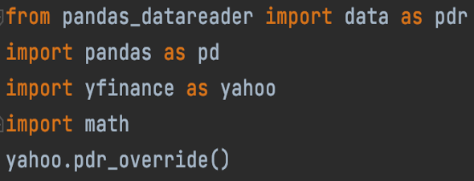
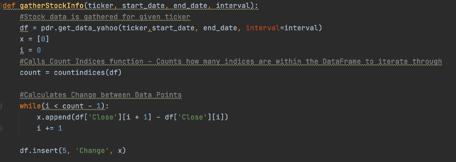
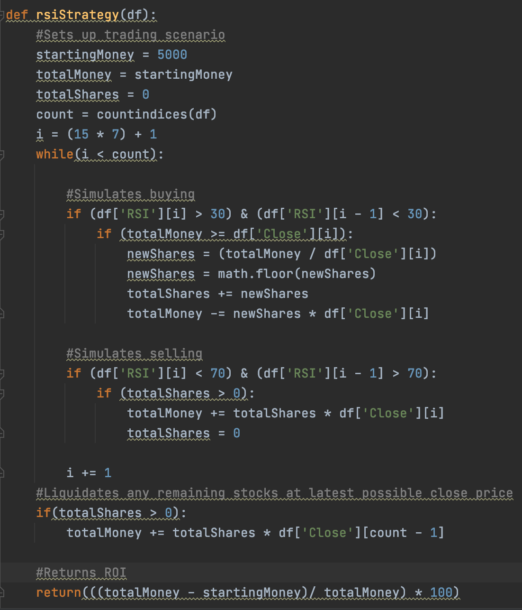

RSI Strategy Analysis
Intro:
The stock market has been an interest of mine for years. With this, I decided to pair my interest in finances with my love for Data Science. Recently, I have been intrigued by a strategy based on the Relative Strength Index (RSI) for trading. As the name suggests the RSI provides information to the trader regarding the stock’s standing as either overbought or oversold. If the RSI is below 50, we can say that the RSI would suggest the stock to be relatively oversold. Likewise, if the RSI is above 50, we can say that the RSI would suggest the stock to be relatively overbought.
Implementation:
We can implement this in trading in many ways. This project uses the RSI in the following way: If the RSI is below 30, the script will buy as many shares as we can afford once the RSI crosses over 30. If the RSI is above 70, the script will sell as many shares as we have once the RSI crosses back below 70. The script will do so for the given period on the interval of 1 Hour.
The Code:
First, we must import the required libraries, Pandas, Pandas_datareader, YFinance, and math. The Pandas and Pandas_datareader modules allow us to work with DataFrames. This data type allows our script to read, clean, and process CSV files. The YFinance module is an unofficial Python library allowing us to gather info regarding the stock market including the Open Price, Close Price, and Volume.

In our ‘gatherStockInfo’ function, two things happen. First, for our given ticker, the stocks data is collected from Yahoo Finance!. This first part of the function also calculates the change in preparation for calculating the RSI.

In the latter half of this function, I calculate my RSI. Unfortunately, the yfinance module does not provide indicators within itself. Therefore our script must calculate for us. As you can see, the first 15 days are filled with 0s because we cannot calculate the RSI effectively with that little of information. The number 7 here refers to the number of hours in the trading day from 9:30 to 3:30. The length variable determines the length of the RSI. To begin our calculation, we sum all positive changes and all negative changes over our length. We then take the absolute value of our negative change and use our summations to calculate the average positive and average negative change. From there, we divide our average positive change by our average negative change to find our relative strength. Then, we calculate the RSI using the formula in the code. Finally, we append our RSI to the list Y, later used to create a new column on our Data Frame.

From there, our script must implement our RSI. I accomplish this through the function displayed to the left. I imitate a trading situation with some starting sum of money. I then iterate through our data frame, from our start date, and make trades according to the rules discussed in the introduction. From there, it calculates the Return on Investment using the simple Return on Investment formula.

After implementing my RSI Strategy, I create a watchlist iterating through it using the RSI strategy. Using functions created throughout this program, I append each stock's ROI to a new list. In combination with this, I create a new list with the ROI assuming I bought and held the given stock for this period. Using these two ROI lists, I create a new Data Frame and save my results to a CSV.
Note:
I did not need to clean the data considering my script created for as much data as I would analyze.
Visualization:
I chose to use two forms of visualizations from Tableau. Bar graphs, and Box and Whisker Plots. I used a Bar Graph because there are two pieces of data across many companies that each company shares. For each company, bar graphs allow the audience to easily compare each strategy. I also included a shorter, 6-month time frame to illustrate any changes in data if we shrink the time frame. This affects the strategy slightly. I also chose to use dual box and whisker plots. These plots show the data spread and allow the audience to compare the median, quartiles, and outliers between the two strategies.
Conclusions:
This data and visualization would suggest that in the past year, an investor’s portfolio would have performed better for these stocks chosen. Although this could be the case, this result leads me to believe there was an error. The most likely source of error would be when my script calculates the change for each index, or where it calculates the RSI. This is more likely the source rather than the implementation because before I implemented the RSI I tested multiple implementation methods.
Future Research:
Because of this possible error, I plan to look back at this project, revise my RSI formula, and try again. Another future piece of research will be to use an exponential moving average instead of the simple moving average for RSI calculations which I used in this experiment. I used the simple moving average to get the calculations correct the first time. Because many trading platforms use the exponential moving average, this places limits on the scope of my research.
Github Link: